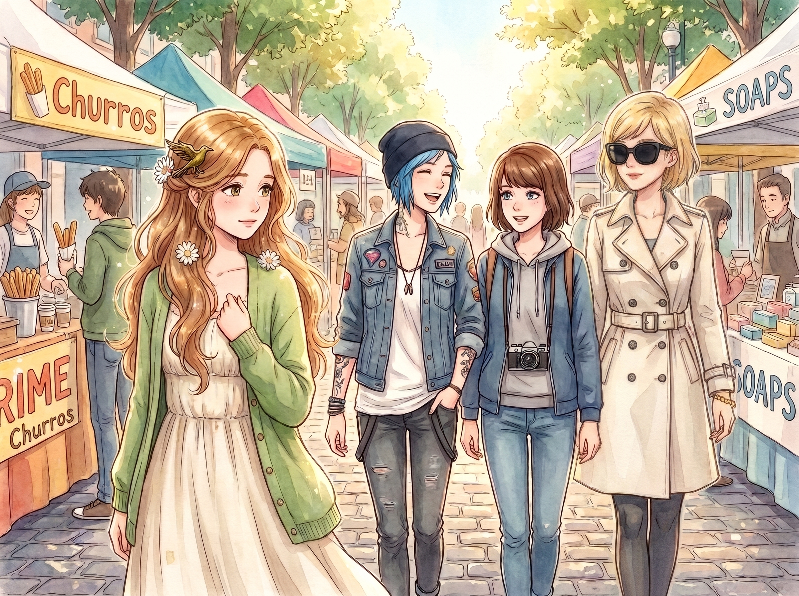
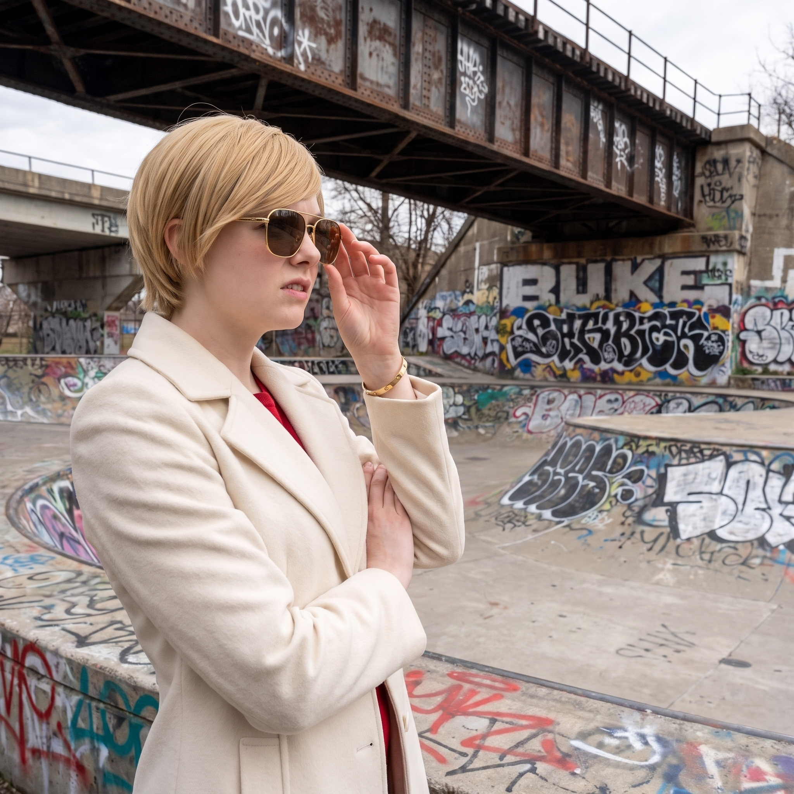

市集裡的守護


週六上午的波特蘭週末市集人潮湧動，空氣中飄散著肉桂吉拿棒、現磨咖啡與手工肥皂的香氣。
當四人並排走進鵝卵石街道時，整條街的目光焦點幾乎在三秒鐘內被瞬間鎖定。
Kate 穿著一條米白色的亞麻長裙，外搭淺草綠針織開衫，那頭剛解開束縛的金褐色微卷長髮及腰散落，髮側斜插著 Chloe 親手旋壓拋光的黃銅烏鴉髮簪與兩朵小白菊。微風拂過，長髮在晨光中泛起如絲綢般的光澤，整個人乾淨溫柔得宛如從古典油畫裡走出來的林間精靈。
一、街道兩側的超高回頭率
市集兩邊的攤主和行人下意識地放慢了腳步。賣手工皮具的文藝青年手裡的打孔機停在半空，眼神發直；幾位正在挑選乾花的波特蘭本地阿姨忍不住低聲讚嘆：「天啊，看那個金髮姑娘的頭髮，簡直像天使一樣漂亮……」
Max 脖子上掛著相機，像個專業護法一樣走在 Kate 斜前方，嘴角壓都壓不住，每隔三步就以極其刁鑽的視角按下一張盲狙抓拍，心裡的小本本已經在盤算洗成巨幅海報。
Kate 顯然還沒完全習慣這種毫不掩飾的矚目，臉頰泛著淡淡的緋紅，有些侷促地伸手想去拽衣角，卻被身邊的同伴穩穩托住了手肘。
二、不良分子的口哨與雙重核級反殺
當走到靠近舊鐵道橋下的塗鴉滑板區時，三個靠著欄杆、穿著鬆垮連帽衫的街頭混混吹了聲極其響亮且輕浮的口哨。
其中一個留著鼻環的傢伙甚至嬉皮笑臉地往前湊了半步，朝著 Kate 挑逗地吹口哨：「嘿，金髮小妞，哪個童話故事裡跑出來的？要不要哥哥帶妳去喝一杯——」
話音還沒完全落地，兩道冰冷如刀的殺氣已經同時將他死死釘在原地。
Victoria 甚至連腳步都沒停，只是優雅地抬手推了推金絲眼鏡，眼神像是看見了一坨黏在鞋底的下水道垃圾。她雙臂環胸，微揚下巴，用足以凍結整個街區的傲慢腔調冷冷開口：「退後兩公尺，衣著品味低劣的街頭垃圾。你那件仿冒衛衣上散發出來的廉價大麻與汗酸味，已經嚴重污染了這條街的空氣指數。」
Chloe 比 Victoria 更粗暴。她一把扯下嘴裡的棒棒糖，一腳踩在旁邊生鏽的鐵欄杆上，一隻手插在工裝褲兜裡，指尖悄悄按開了口袋裡那把隨身折疊刀的鎖扣，另一手垂在身側，深藍色短髮隨風一甩，眼神兇狠得像隻護食的野狼：「滾遠點，長了張爛嘴的死混混！沒長眼睛看清楚老娘是誰？再敢朝 Marsh 吹一聲哨子，老娘待會兒就提著車間的重型管鉗過來，把你那顆破鼻環連同你的牙齒一起擰下來當軸承墊片！」
那三人被這陣氣勢唬了一下，卻沒有立刻退開，鼻環男甚至還嬉皮笑臉地想再上前一步嗆聲。
站在後方的 Max 瞳孔微微一縮，手指已經悄悄摸向了脖子上掛著的拍立得——那張十分鐘前才拍下的相片還捏在指尖，隨時準備按下快門、發動回溯，只要情勢再惡化一分，她就會毫不猶豫地把這一刻抹去重來。
就在這個當口，周圍原本駐足圍觀的攤主與路人開始起了反應——賣手工皮具的文青已經默默舉起手機對著三人的方向錄影，隔壁攤位的阿姨也扯著嗓子喊了一聲：「喂！市集保安在哪裡？這邊有人騷擾客人！」不遠處負責巡邏的兩名市集安保人員，腰間的對講機恰好「滋」地一聲響起同事的呼叫，兩人聞聲同時轉頭朝這個方向望了過來，確認情況後已經開始加快腳步朝這邊走來。
看見手機鏡頭對準自己、又聽見「保安」兩個字，三人臉上的嬉皮笑臉瞬間僵住了幾分。鼻環男梗著脖子又嘴硬了兩句：「哼，一群瘋女人，誰稀罕……」但眼神已經開始不安地往安保人員的方向瞟。
「怎麼，現在才想起自己是個什麼身份？」Chloe 冷笑一聲，故意又往前逼近一步。
三人交換了一個眼神，終究是不想在眾目睽睽、又有安保逼近的情況下把事情鬧大，罵罵咧咧地丟下幾句「有種別讓老子再看到你們」之類的場面話，故作瀟灑地轉身鑽進了人群，腳步卻明顯比來時快了不少。
三、混混的落荒而逃
在名流資本的法律碾壓與重型機械師的物理恐嚇雙重暴擊下，三個混混臉色瞬間煞白，一句話都沒敢反駁，互相推搡著罵了句髒話，灰溜溜地鑽進人群光速逃跑。
街道兩旁原本擔心的攤主們甚至響起了幾聲善意的低笑。
「呼……痛快！」Chloe 甩了甩手腕，把棒棒糖重新塞回嘴裡，轉過身對著 Kate 挑眉大笑，「看見沒，Marsh？以後誰敢盯著妳亂叫，老娘就用剛才靶場學的姿勢過去給他上一課！」
「Price，別把粗俗當成戰術。」Victoria 拍了拍大衣上並不存在的灰塵，優雅地翻了個白眼，但嘴角卻勾著極淺的弧度，「不過剛才那句管鉗威脅……氣勢勉強算你合格。」
被護在最中間的 Kate 眨了眨眼睛，剛才的一點緊張徹底煙消雲散。她看著身邊張牙舞爪的 Chloe、傲嬌冷艷的 Victoria 以及在一旁狂按快門笑得前仰後合的 Max，終於忍不住撲哧一聲笑了出來。
Kate 伸手輕輕拉住 Chloe 的袖口和 Victoria 的大衣衣角，陽光落在她金色的長髮上，眼底滿是踏實而明亮的笑意：「謝謝你們……走吧，前面那家手工草本茶攤位，我請大家喝冰鎮接骨木花茶～」